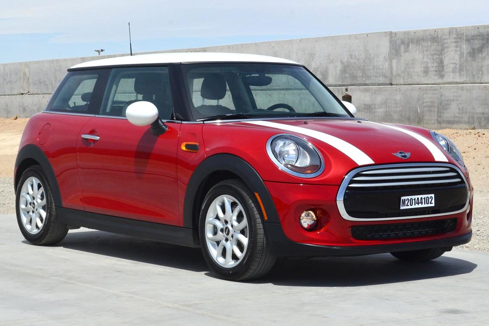
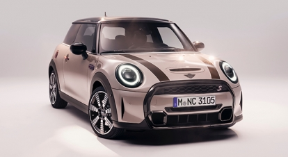
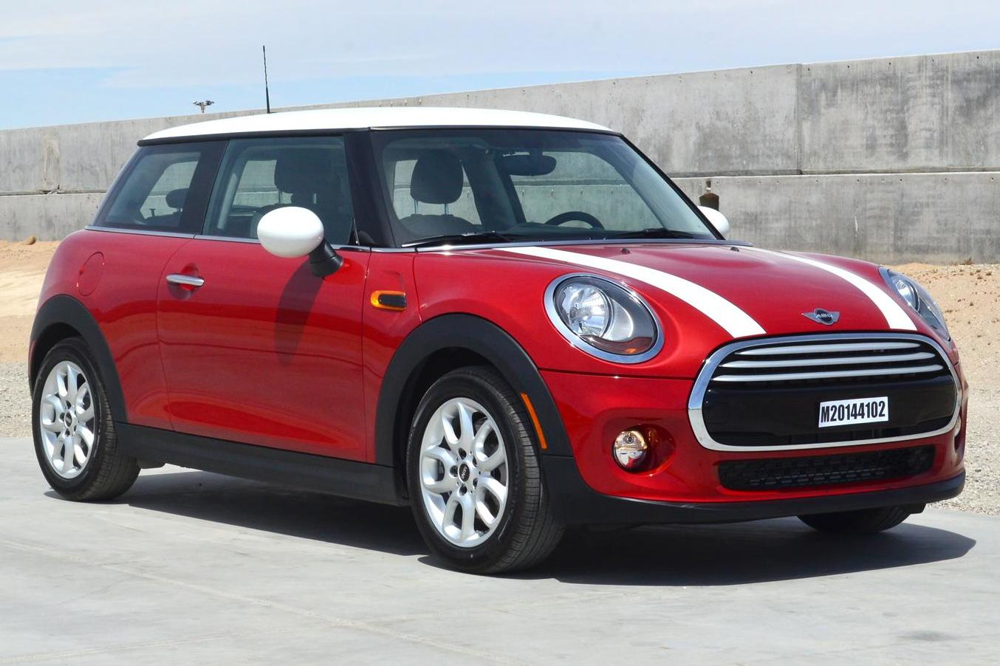
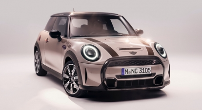

Minicooper
- Cars of the original Mini series called the "Mini Cooper", made by the British Motor Corporation and its successors 1961–1971, and 1990–2000
- Cars of the Mini (marque), including a number of different models produced by BMW since 2000 with the "Mini Cooper" title:
- Mini Hatch, first introduced in early 2000, second generation from 2006, third from 2014
- The Mini Clubman is a subcompact executive car engineered and manufactured by BMW and sold under the Mini marque.
- The first-generation Clubman was introduced in 2007, as a variant of the Mini Hatch (Hardtop in the US). A commercial version called Clubvan was added to the range in 2012.
- However, BMW did not initially purchase the rights to use those names, and so decided to call its larger-variant "Clubman", a name which it did own rights to.
- The model variants are the same as the Hatch/Hardtop version; being in available in One, Cooper, Cooper D, Cooper SD, Cooper S and John Cooper Works (JCW) variations.
- Four-cylinder engine, automatic transmission and manual transmission selections are identical to those used in the corresponding hatchback models, except for the 66 kW (90 PS; 89 bhp) One Diesel which is not offered in the Clubman.
- These marketing strategies proved very successful; Mini production actually had modest increases through the mid-1980s, from 34,974 Minis in 1984 to 35,280 in 1985 and 39,800 in 1986.
In 1990, the Mini Cooper was relaunched - 20 years after the demise of the original model - which saw Mini production pass 40,000.
Once again, it featured the long-running 1275-cc engine which had featured on the original Mini Cooper S.
- The Mini Van was a commercial panel van (in US English, a sedan delivery) rated at ¼-ton load capacity.
Built on the longer Traveller chassis but without side windows, it proved popular in the 1960s UK as a cheaper alternative to the car: it was classed as a commercial vehicle and as such carried no sales tax.
- Sales of the Mini Cooper were: 64,000 Mark I Coopers with 997 cc or 998 cc engines; 19,000 Mark I Cooper S with 970 cc, 1,071 cc or 1,275 cc engines; 16,000 Mark II Coopers with 998 cc engines; 6,300 Mark II Cooper S with 1,275 cc engines.
.webp) 


